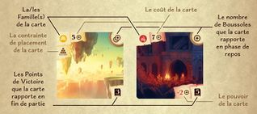
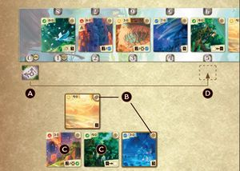

Boreal
Board Game Arena 官方规则文档
Overview
The game is played in rounds, where each player will go through 2 phases (Exploration & Rest phase) before passing the turn.
Card Anatomy
Top left: card family, followed by compass cost. Note that “Archive” cards have cost against a grey background, and belong to zero or multiple families.
Top right: # of compass replenished during resting phase
Bottom right: VP in book symbol, and some cards have an additional power/special effect

Player Turn
On your turn you will go through 2 phases; Exploration & Rest
Exploration Phase
During this phase, you can either:
- Build a card into your tableau from the center board or your reserve
- Reserve a card from the center board into your reserve
Build
Each player begins the game with an exploration token on the 5 spot, which tracks the number of compasses you have.
When you build a card, you must pay its cost in number of compass (move your exploration token).
If you build a card from the center board, the card can only come from those in the same column or to the left of your exploration token. For example, if your token is at the 3 spot, you can only pick cards #1, #2 or #3
You build by placing cards in your tableau in the shape of a pyramid (4 cards on bottom, 3 on second level, 2 on the third, and 1 on top). To build a card on an upper level space, there must be 2 cards right below it
Note:
- You can only ever build OR reserve 1 archive card.
- If you already have an archive card reserved, you can't reserve another one
- Once a card is taken from the center board, its instantly replaced with a card from the main deck
Reserve
If you choose to reserve a card instead, you can take ANY card from the center board (it does not have to be on the same column or to the left of your exploration token). Also when you reserve a card, you don't need to move your exploration token. You can have multiple cards in your reserve, though they must be face up.
Rest Phase
Count all of the compasses on cards built in your pyramid that are open* plus any additional compass given by the space of your exploration token. Move that many spaces to the right (Figure 2, D).
*An open card is a card that doesn't have a card on top of it.

In this example, the player would gain 5 compasses in total (Figure 2, A)
- 2 from the exploration token being in space 0
- 3 from their open cards (Figure 2, B) (the other cards (Figure 2, C) have cards on top of them).
Game End
Endgame is triggered when one player manages to build the 10th card in their pyramid. Continue until both players have equal turns.